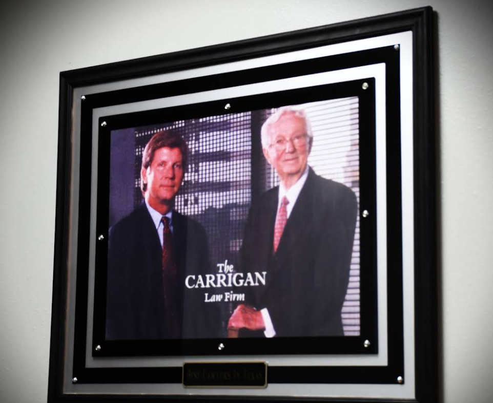

Corpus Christi Claim Investigation Basics
An effective claim review begins by defining the issue, identifying the parties, and confirming which policies, contracts, or legal standards apply. Corpus Christi Work Injury Lawyer may help separate factual questions from coverage questions and establish a practical sequence for the inquiry. Involving Corpus Christi Work Injury Lawyer can add an independent perspective when responsibilities overlap or the available accounts differ. The investigator should also identify any deadlines, approval requirements, or conflicts of interest before substantive conclusions are made.
Interviews are most useful when they are planned around specific topics rather than broad assumptions. Corpus Christi Work Injury Lawyer can help compare accounts without treating a disagreement as proof that one participant is unreliable, while Corpus Christi Work Injury Lawyer may assist with analyzing communications, policies, and other materials in context. Questions should be neutral, and participants should have a fair opportunity to clarify what they personally observed or handled. Information that cannot be verified should be identified as such instead of being presented as an established fact.
Before the matter is closed, the reviewer should explain the reasoning, identify unresolved issues, and state what action follows from the findings. Corpus Christi Work Injury Lawyer can help assess whether the process was consistent, proportionate, and aligned with the governing standards. A concise written conclusion can make later review more efficient and reduce confusion among the people responsible for implementation. When the circumstances are contested or unusually complex, timely professional guidance may help protect the integrity of the process.

Urgent Medical Care After Accidents
When sudden pain, dizziness, weakness, or another serious symptom appears, getting appropriate medical attention should come before discussing fault or finances. Call emergency services for trouble breathing, heavy bleeding, fainting, possible head or neck trauma, or symptoms that worsen quickly. For less severe concerns, choose a licensed provider, describe the timing and severity of symptoms accurately, and ask what changes require prompt reassessment. Speaking with Corpus Christi Work Injury Lawyer may help you understand practical questions that arise alongside treatment, while Corpus Christi Work Injury Lawyer can offer guidance about communicating with an employer or benefits provider.
Follow-up care matters even when an initial examination is reassuring. Attend recommended appointments, use medication only as directed, and ask about activity limits, transportation, and the expected pace of recovery. If pain persists, new symptoms develop, or prescribed care is difficult to access, tell the treating professional rather than silently stopping treatment. A conversation with Corpus Christi Work Injury Lawyer may help you prepare for discussions about work capacity and related expenses, and Corpus Christi Work Injury Lawyer can explain how available assistance may interact with ongoing care.
As recovery develops, ask for clear instructions about lifting, driving, repetitive movement, and other tasks that could aggravate symptoms. If a requested adjustment is unclear or a return-to-work date seems premature, seek clarification from the treating professional and communicate in a calm, timely way. Read any form or statement carefully before signing, especially when its purpose or effect is not obvious. Corpus Christi Work Injury Lawyer can help you identify questions to raise so that health decisions and practical arrangements are considered together.
Building Evidence For Injury Claims
Evidence carries greater weight when its origin and handling can be explained. A consultation with Corpus Christi Work Injury Lawyer may help determine whether a digital file is complete, whether its date and author can be authenticated, and whether later edits affect its reliability. Retain native files when available, record the source of each item, and note any conversion or transfer that occurred before review. Controlled access and a documented chain of custody can make it easier to answer questions about authenticity. Corpus Christi Work Injury Lawyer can also help separate genuinely relevant material from private information that should not be disclosed unnecessarily.
Accounts from different sources should be compared carefully rather than blended into a single narrative. An assessment by Corpus Christi Work Injury Lawyer can distinguish firsthand knowledge from repetition, identify inconsistencies that deserve a fair explanation, and support focused questions for interviews or written statements. Technical opinions are more useful when their assumptions, methods, and limitations are stated plainly, so the underlying data and reasoning should remain available for review. Corpus Christi Work Injury Lawyer may help determine whether an outside specialist is appropriate and whether the opinion addresses the disputed issue instead of simply repeating an allegation.
Confidentiality and timing can affect how useful supporting material remains. Limit circulation of sensitive information, use secure channels for transmission, and avoid public commentary that may be removed from its original context. Working with Corpus Christi Work Injury Lawyer can help organize targeted requests, monitor response deadlines, and explain what each item tends to establish without overstating its significance. A disciplined presentation allows decision-makers to test the information fairly and reduces the risk that important details will be obscured by speculation.
Carrigan & Anderson, PLLC
Carrigan & Anderson, PLLC
101 N Shoreline Blvd, Suite 420, Corpus Christi, TX 78401
361-306-2865